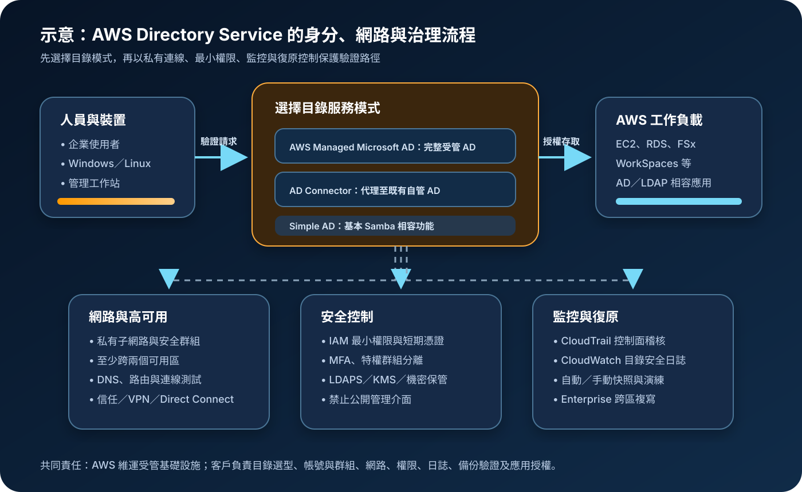

AWS Directory Service：受管 Active Directory 與混合身分連接
AWS Directory Service 提供在 AWS 使用 Microsoft Active Directory 或相容目錄的多種方式。架構重點不是只建立一個目錄，而是先確認需要完整受管 AD、既有目錄代理，或基本相容功能，再把 DNS、網路、特權管理、日誌、快照與跨區復原納入同一條驗證路徑。
作者：Dr. William｜查閱與發布：2026-10-31
服務定位
AWS Directory Service 讓 AD 相容工作負載在 AWS 使用受管或既有的目錄。主要模式包括 AWS Managed Microsoft AD、AD Connector 與 Simple AD。AWS Managed Microsoft AD 由實際 Microsoft Active Directory 技術提供，適合需要網域加入、群組原則、信任關係、Windows 整合及多種 AWS 服務整合的工作負載；AD Connector 是代理閘道，不在 AWS 複製或快取使用者憑證，驗證仍回到既有自管 AD；Simple AD 以 Samba 4 提供基本相容功能，功能與整合範圍較小。
Directory Service 可支援 EC2、Amazon FSx for Windows File Server、RDS 的部分資料庫引擎、Amazon WorkSpaces 與其他 AD 感知應用。它不取代 IAM Identity Center 的多帳號 AWS 人員存取治理，也不取代 Amazon Cognito 的大量應用程式終端使用者身分管理。
核心概念與服務邊界
目錄模式
- AWS Managed Microsoft AD：AWS 維運網域控制站底層、監控、修補與復原；客戶管理使用者、群組、組織單位、群組原則、信任與應用整合。
- Standard Edition：適合較小規模的新受管網域，物件容量與規模上限低於 Enterprise。
- Enterprise Edition：支援較大物件容量，並可使用多區域複寫等進階能力。
- Hybrid Edition：用於把既有自管 AD 延伸至 AWS，由 AWS 管理部署在 AWS 的網域控制站；應確認區域、功能與既有森林條件。
- AD Connector：將 AWS 應用的驗證請求轉送至既有 AD，依賴至自管網域控制站的網路、DNS 與可用性。
- Simple AD：提供基本 AD 相容功能，但不支援完整 Microsoft AD 能力；使用前必須逐項驗證應用需求。
驗證與治理邊界
- 目錄驗證：確認使用者或電腦身分，不自動決定所有 AWS API、檔案、資料庫與應用權限。
- DNS 依賴：網域加入、服務探索、Kerberos 與信任高度依賴正確 DNS、時間同步、路由及連接埠。
- VPC 關聯：建立目錄時選擇 VPC 與跨不同可用區的子網路；工作負載必須能解析並連線至目錄 DNS。
- 信任關係：可連接既有 AD 森林或網域，但信任方向、名稱解析、路由與防火牆必須一致設計。
- 控制面與資料面：CloudTrail 記錄 Directory Service API；網域控制站安全事件須另設定轉送至 CloudWatch Logs。
- 共享目錄：跨 AWS 帳號分享可降低重複目錄，但會擴大治理邊界，必須明確管理帳號、VPC、服務與撤銷流程。
適合與不適合的使用情境
適合
- Windows 工作負載需要網域加入、群組原則、Kerberos、LDAP 或既有 AD 管理工具。
- FSx for Windows File Server、RDS for SQL Server、WorkSpaces 或 AD 感知應用需要中央目錄。
- 企業要把部分 AD 工作負載遷移至 AWS，並與既有自管 AD 建立信任或延伸部署。
- 多個 AWS 帳號或 VPC 需要共用受治理目錄，並能建立清楚的網路及責任邊界。
- 全球應用需要在適用版本下使用 AWS Managed Microsoft AD 多區域複寫，降低遠端驗證延遲。
不適合或不能單獨完成
- 只需要 AWS 帳號的人員單一登入與權限集；應優先評估 IAM Identity Center。
- 面向大量消費者或 SaaS 訂閱者的註冊、社群登入與權杖；應評估 Amazon Cognito 或專用 CIAM。
- 希望 AD Connector 在自管 AD 中斷時繼續驗證；Connector 本身不取代自管網域控制站的高可用。
- 需要 Simple AD 未支援的信任、完整 PowerShell AD 能力、LDAPS、結構延伸或特定應用整合。
- 把目錄驗證誤當成應用授權、網路隔離、資料加密、機密管理、備份或事件偵測。
示意故事案例：把內部 Windows 應用遷移至 AWS
以下為示意案例，不代表特定企業或正式部署。 一家公司準備把檔案伺服器、SQL Server 報表與數個 Windows 內部系統移至 AWS。既有自管 AD 仍服務辦公室裝置，但機房網路只有單一路徑，且多個服務共用高權限服務帳號。若直接使用 AD Connector，AWS 端驗證會持續依賴機房 AD 與連線；若建立獨立目錄，又會增加帳號同步與雙重治理。
團隊比較 AWS Managed Microsoft AD 與 AD Connector 後，選擇在兩個私有子網路建立 AWS Managed Microsoft AD，透過冗餘 VPN 或 Direct Connect 與既有 AD 建立信任。FSx、RDS 與 EC2 使用目錄 DNS；管理者以受控工作站和短期 AWS 憑證管理 Directory Service 控制面，AD 特權帳號與一般帳號分離。服務帳號改用群組受管服務帳號或最小權限專用帳號，應用程式機密放入 Secrets Manager 或 Parameter Store。
團隊把 Directory Service API 留存在組織級 CloudTrail，將網域控制站安全日誌轉送到 CloudWatch Logs，對特權群組變更、重複登入失敗與日誌停送告警。上線前執行網路斷線、單一可用區故障、DNS 失效、快照還原與信任撤銷演練；跨區需求則另評估 Enterprise Edition 多區域複寫及應用層復原。

建置與運作流程
- 盤點需求：列出應用、使用者與電腦數、AD 功能、LDAP／Kerberos、信任、區域、法規、RTO 與 RPO。
- 選擇模式與版本：比較 AWS Managed Microsoft AD Standard、Enterprise、Hybrid、AD Connector 與 Simple AD，逐項驗證相容性。
- 規劃名稱：決定網域、DNS 命名、組織單位、群組、服務帳號與既有森林關係，避免使用不可路由或衝突名稱。
- 設計網路：在不同可用區配置私有子網路，確認 CIDR、DNS、路由、安全群組、網路 ACL、VPN 或 Direct Connect。
- 建立最小管理權限：限制建立、分享、刪除、信任、快照、日誌與多區域操作；管理者使用 MFA 與短期憑證。
- 部署目錄：建立目錄後驗證網域控制站、DNS 位址、子網路與服務狀態，不把建立成功視為應用已可用。
- 建立管理工作站：使用私有且受管的 Windows 主機安裝 AD 管理工具，限制來源、補丁、剪貼簿與管理通道。
- 設定帳號治理：建立分層管理群組、密碼與鎖定政策、服務帳號週期、離職停權及定期存取複核。
- 整合既有目錄：若使用信任或 AD Connector，先驗證雙向 DNS、時間、路由、連接埠與冗餘路徑。
- 整合工作負載：分批加入 EC2、FSx、RDS、WorkSpaces 或應用，逐一測試登入、服務帳號與權限。
- 啟用安全傳輸：依應用能力使用 LDAPS、Kerberos 與加密連線，禁止未受保護的管理與驗證通道。
- 集中機密：不把 credential、Access Key、Secret Key、Token、密碼或 cookie 寫入映像、腳本、標籤或日誌；使用 Secrets Manager 或 Parameter Store。
- 啟用稽核：以 CloudTrail 記錄控制面操作，將目錄安全日誌送至 CloudWatch Logs，建立告警與保留政策。
- 驗證復原：確認自動快照、手動快照限制、還原影響及演練程序；多區域需求評估版本與區域限制。
- 持續維運：追蹤容量、驗證延遲、複寫、信任、DNS、費用、特權群組與未使用帳號。
成本、可用性與維運考量
AWS Managed Microsoft AD 依版本、區域與網域控制站數量計費；額外網域控制站、多區域複寫及共享可能增加費用。AD Connector 與 Simple AD 依大小與運行時間計費；WorkSpaces 等服務在特定條件下可能有價格抵扣或不同計費規則。CloudWatch Logs、CloudTrail trail、KMS、VPN、Direct Connect、資料傳輸、管理 EC2 與備份周邊也會產生費用。實際金額須以查閱日定價頁、選定區域及帳單驗證。
AWS Managed Microsoft AD 建立時會把網域控制站配置在不同可用區，能降低單一可用區故障風險，但應用仍可能因 DNS、路由、安全群組、信任或自管 AD 中斷而失敗。增加網域控制站可改善容量與冗餘，不代表所有依賴服務都自動具備相同可用性。AD Connector 的可用性尤其取決於自管 AD、RADIUS、網路與 DNS 的端到端設計。
AWS Managed Microsoft AD 提供自動每日快照及有限數量的手動快照，可用於時間點還原；還原會影響快照後的目錄變更，必須在非正式環境演練。Enterprise Edition 可在支援區域配置多區域複寫，但仍須確認主要區域條件、區域限制、應用資料的跨區策略與故障切換程序。
AWS Directory Service 特有資安風險與控制
- 高權限目錄帳號遭濫用：管理帳號與日常帳號分離，限制特權群組，使用受控工作站、MFA、雙人覆核與定期複核。
- 控制面權限過大：Directory Service API 權限採 IAM 最小權限，AWS 管理者使用 IAM Identity Center、MFA 與短期憑證。
- 共用服務帳號：每個應用使用獨立最小權限帳號或適用的群組受管服務帳號，設定輪替、停用與擁有者。
- 網路暴露：目錄部署於私有子網路，安全群組只允許必要來源與 AD 連接埠，不公開管理主機或 LDAP 介面。
- 未加密 LDAP：支援時使用 LDAPS 或 Kerberos，驗證憑證信任與到期日，逐步淘汰明文 LDAP 綁定。
- DNS 汙染或設定錯誤：限制 DNS 管理權，監控轉送器、條件轉送與記錄變更，測試名稱解析及故障行為。
- 信任邊界過寬：選擇必要的信任方向與範圍，限制路由、名稱解析及可驗證主體，定期檢查未使用信任。
- AD Connector 單點依賴：自管 AD、RADIUS、VPN／Direct Connect 與 DNS 都需多路徑、多網域控制站及故障測試。
- 共享目錄擴大影響：記錄共享帳號與 VPC，限制可整合服務，建立撤銷、事件隔離與帳號退出程序。
- 日誌不足：CloudTrail 僅涵蓋服務 API；另將目錄安全日誌送至 CloudWatch Logs，保護留存與告警設定。
- 機密外洩：credential、Access Key、Secret Key、Token、密碼與 cookie 不得出現在程式、映像、工單或日誌；應使用 Secrets Manager 或 Parameter Store。
- 加密責任混淆：確認服務管理的加密能力、傳輸保護、應用資料 KMS 加密與金鑰政策，不能只依賴目錄本身。
- 快照還原覆蓋新資料：建立核准、影響評估、還原演練與驗證清單，保存快照後重要變更的獨立紀錄。
- 跨區複寫誤當完整災難復原：目錄複寫不包含所有應用資料；另設計 AWS Backup、資料庫、檔案與應用的跨區復原。
- 惡意或異常登入未偵測：對特權群組變更、鎖定、失敗登入、信任變更與日誌停送建立 CloudWatch 或 SIEM 告警。
共同責任邊界
AWS 負責 Directory Service 受管服務與底層基礎設施安全；對 AWS Managed Microsoft AD，AWS 也管理受管網域控制站的部署、監控、修補與部分復原作業。客戶負責選擇正確目錄模式與版本、VPC 與連線、使用者和群組、組織單位、群組原則、信任、特權帳號、應用授權、日誌、快照使用、復原演練及法規符合性。
AD Connector 下，自管 AD 的網域控制站、補丁、備份、容量、可用性與憑證仍由客戶負責。所有模式都必須共同落實 IAM 最小權限、MFA／短期憑證、網路隔離、公開存取防護、適用的 KMS 加密、Secrets Manager 或 Parameter Store、CloudTrail／CloudWatch，以及備份與跨區復原。
上線與維運可執行檢查清單
- □ 已盤點應用、物件數、AD 功能、區域、整合服務、RTO 與 RPO。
- □ 已比較 Managed Microsoft AD、AD Connector、Simple AD 與其他身分服務，未因名稱相似誤選。
- □ 版本、物件容量、應用相容性、多區域及區域限制已依官方文件驗證。
- □ 目錄位於不同可用區的私有子網路，CIDR、DNS、路由與安全群組已測試。
- □ VPN 或 Direct Connect、自管 AD、RADIUS 與 DNS 均有冗餘路徑及中斷演練。
- □ Directory Service 控制面權限採最小權限，管理者使用 MFA 與短期憑證。
- □ AD 特權帳號與日常帳號分離，特權群組有擁有者、核准與定期複核。
- □ 管理工作站位於受控網路，已限制遠端來源、補丁、軟體與資料外流通道。
- □ 密碼、鎖定、服務帳號、離職停權與緊急帳號程序已建立並測試。
- □ 信任方向、DNS 轉送、名稱解析、路由、連接埠與撤銷程序已文件化。
- □ 公開網路無法直接連線到目錄或管理介面，網路規則只允許必要來源。
- □ 適用的 LDAP 流量使用 LDAPS，憑證信任、輪替與到期告警正常。
- □ 應用機密使用 Secrets Manager 或 Parameter Store，未放入程式、映像、標籤、工單或日誌。
- □ 應用資料與日誌依分類使用 KMS，金鑰政策與跨帳號權限已驗證。
- □ 組織級 CloudTrail 可查到 Directory Service API，日誌集中保存且有刪除保護。
- □ 目錄安全日誌已送至 CloudWatch Logs 或 SIEM，特權與異常事件有告警。
- □ 自動與手動快照狀態正常，還原影響、核准與演練紀錄完整。
- □ 多區域需求已驗證版本與主要區域限制，應用資料另有跨區復原方案。
- □ 已監控目錄容量、驗證延遲、DNS、信任、網路、網域控制站與費用。
- □ 正式內容與設定紀錄不含任何真實 credential、Access Key、Secret Key、Token、密碼或 cookie 值。
AWS 官方一手來源
- What is AWS Directory Service?（查閱：2026-10-31）
- Getting started with AWS Managed Microsoft AD（查閱：2026-10-31）
- Security in AWS Directory Service（查閱：2026-10-31）
- Logging Directory Service API calls using AWS CloudTrail（查閱：2026-10-31）
- Understanding AWS Managed Microsoft AD directory logs（查閱：2026-10-31）
- Enabling MFA for AWS Managed Microsoft AD（查閱：2026-10-31）
- Restoring AWS Managed Microsoft AD with snapshots（查閱：2026-10-31）
- Configure Multi-Region replication for AWS Managed Microsoft AD（查閱：2026-10-31）
- AWS Directory Service pricing（查閱：2026-10-31）
- AWS Shared Responsibility Model（查閱：2026-10-31）
內容說明
本文依查閱日可用的 AWS 官方文件整理，作為基礎學習與架構討論材料；實際部署仍須依最新版本、區域、定價、服務整合、目錄規模、網路條件、法規與復原測試結果調整。